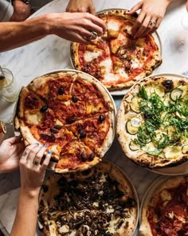
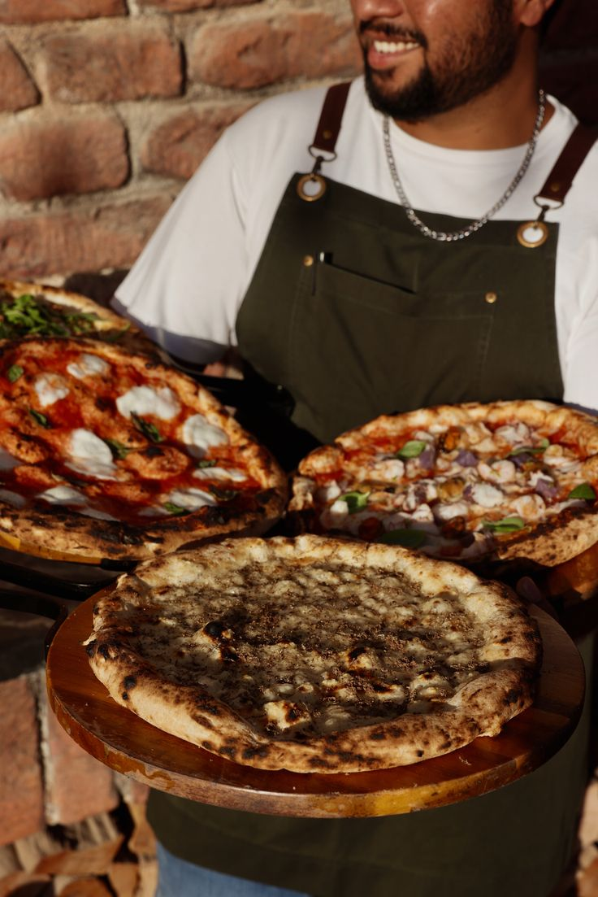
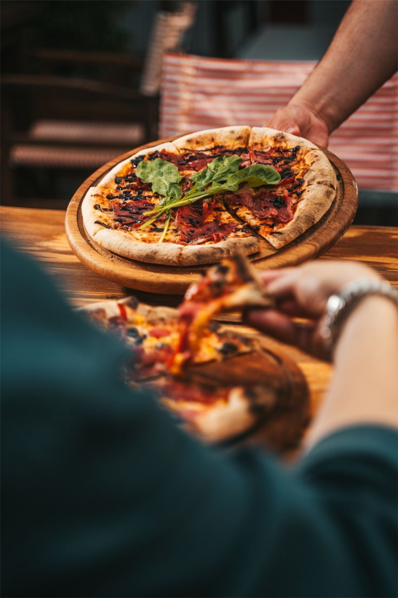
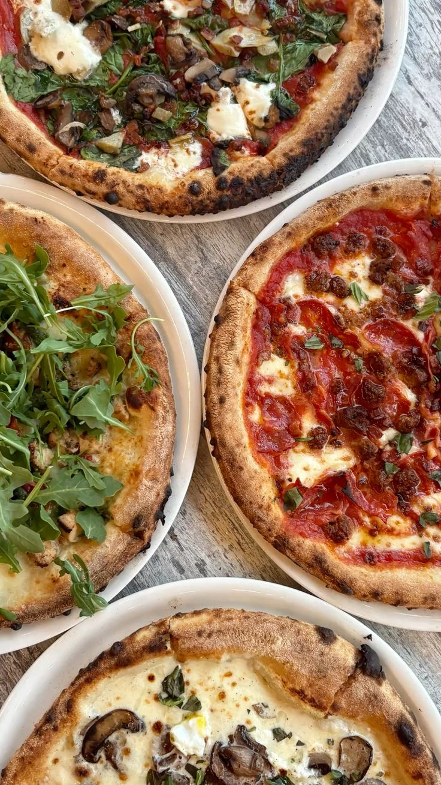
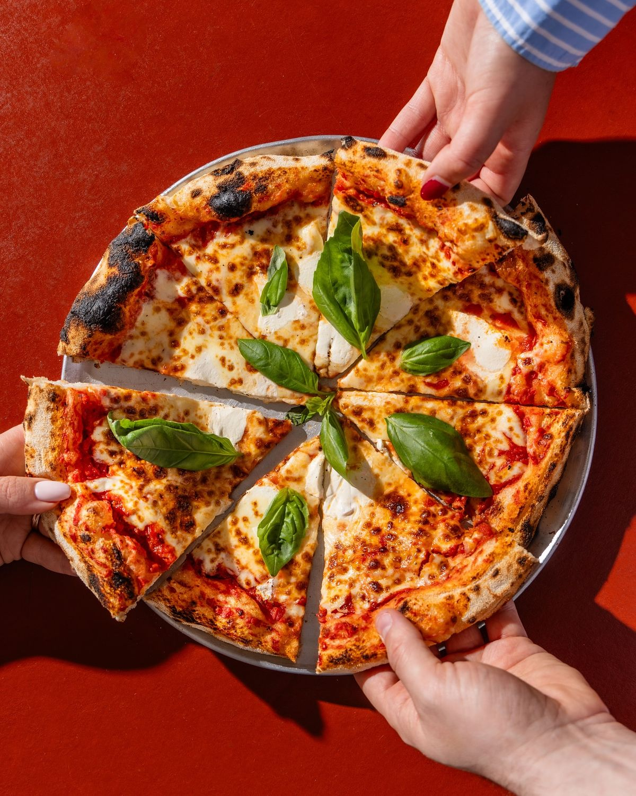
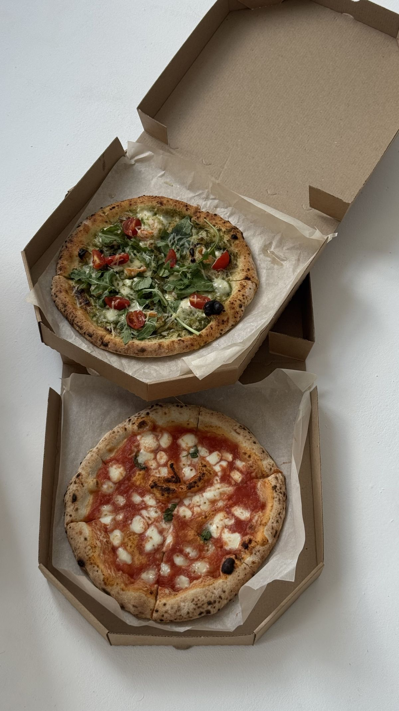

Tomatsauce, mozzarellaost, ko-mozzaella, basillikum,
Tomatsauce, mozzarellaost, skinke
Tomatsauce, mozzarellaost, pepperoni
Tomatsauce, mozzarellaost, skinke, champignon



Tomatsauce, mozzarellaost, aubergine, cherrytomater, hvidløg
Tomatsauce, mozzarellaost, parmaskinke, ruccula, gorgonzola
lukkede pizza med skinke og champignon
Tomatsauce. mozzarellaost, oregano, silkeståret kartoffel, olivenolie
Tomatsauce, mozzarellaost, pølser, sprød bacon, pepperoni
Tomatsauce, mozzarellaost, pesto, kyllingbryst, sprød bacon
Tomatsauce, mozzarellaost, silkeståret kartofler, sprød bacon, pesto, frisk rosmarin
Tomatsauce, mozzarellaost, pepperoni, oksekød, cherrytomater, rødløg
Tomatsauce, mozzarellaost, bresaola, rødløg, ruccula, pesto
Tomatsauce, mozzarellaost, skinke, italiensk stræk salami, sprød bacon
Tomatsauce, mozzarellaost, aubergine, oksekød, rødløg, olivenolie
Tomatsauce, mozzarellaost, hakkede okse, rødløg, cherrytomater, knust chilli
Tomatsauce, mozzarellaost, gorgonzola, okse strimler, champignon, rødløg
Tomatsauce, mozzarellaost, italienske pølser, champignon, kartoffler, rødløg, olivenolie
Tomatsauce, mozzarellaost, spansk chorizo, pølser, bacon, rød jalapenos
Tomatsauce, mozzarellaost, okse, frisk salat, dressing
Tomatsauce, mozzarellaost, sprød bacon, cherrytomater, rødløg
Tomatsauce, mozzarellaost, sprød bacon, parmasanost, rødløg, løg



Dansk mozzarellaost, ricotta ost, silkeståret kartoffel, basillikumspesto
Dansk mozzarellaost, silkeståret kartoffel, italiensk pølse, champignon, rødløg, trøffelolie
Dansk mozzarellaost, silkeståret kartoffel, trøffelolie
Tomat, ost, skinke
Tomat, ost, skinke, ananas
Tomat, ost, pølser
Tomat, ost, pepperoni
cherrytomater, ruccula, mozzarellaost, balsamico, basilikum, rødløg, parmasanost
Kylling, tomat, ruccula, mozzarellaost, parmasanost, pesto